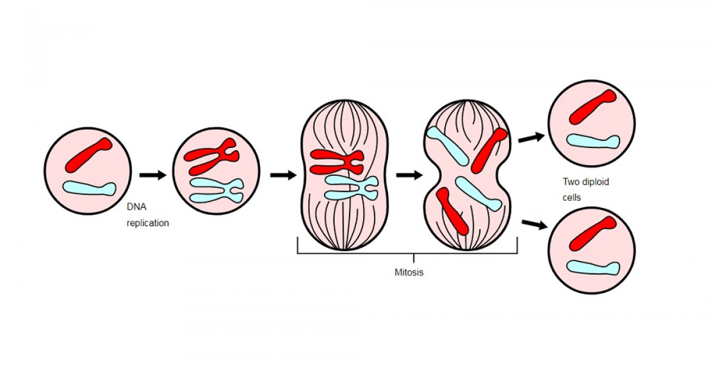

¿Qué es la mitosis?
La mitosis es un proceso de división celular de la célula madre donde esta se divide en dos células hijas. En este proceso se dan distintas etapas como la profase, metafase, anafase y telofase, que permiten a un organismo vivo desarrollarse o reproducirse.